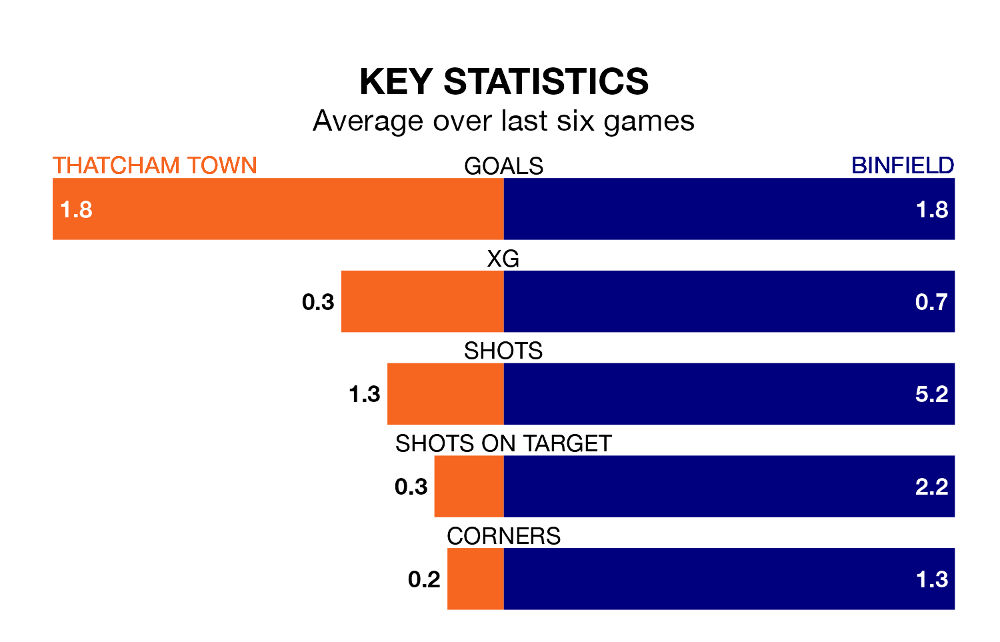

Thatcham Town host Binfield on Saturday at Waterside Park in the Isthmian League Division One South Central.
In their last league match, on February 24, Thatcham lost to Westfield Surrey 1-0 at home.
Binfield drew, 1-1 at home against South Park on Tuesday.
Binfield are 20th in the table after 28 games, of which they have won three and drawn seven, earning 16 points.
Thatcham are 11 places ahead of the visitors in ninth, with 13 wins and five draws putting them on 44 points.
With 30 goals in 28 games so far this season, Binfield are the league's second-lowest scorers with 1.1 goals per game. And they are conceding more than average, letting in 91 goals at a rate of 3.2 per game.
Town, meanwhile, are average scorers, with 1.7 goals per game. They have conceded 1.5 goals per game.
The home team are in mixed form in the Isthmian League Division One South Central, with three wins and a draw from their last six games.
With a win and three draws over that period, Binfield's form is worse – they have taken six points from 18, compared to Thatcham's 10.
In the last five years, Thatcham and Binfield have played each other on five occasions. Thatcham won one of them, Binfield two, and they drew twice.
On average, Thatcham scored 1.8 goals and Binfield 2.4 in those matches.
Their last meeting was on November 11, when Thatcham won 5-3 away.
Updated: 09:34 (UTC), 08/03/24